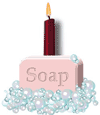

Copyright © tutorialspoint.com
|  |
SOAP is a simple and open standard XML-based protocol for exchanging information between computers. In this tutorial you will learn what is SOAP and Why and How to use it. SOAP is very easy to learn and to use and in demand too. |

What is SOAP ?
This chapter explains what is SOAP and why SOAP is useful.
SOAP Message Structure
This chapter describes the structure of a complete SOAP message.
SOAP Envelope
This chapter describes the SOAP Envelope element of SOAP message.
SOAP Header
This chapter describes the SOAP Header element of SOAP message.
SOAP Body
This chapter describes the SOAP Body element of SOAP message.
SOAP Fault
This chapter describes the SOAP Fault element of SOAP message.
SOAP Encoding
This chapter describes the built-in set of rules for encoding various data types.
SOAP Transport
This chapter describes the transport protocols for SOAP to exchange the messages.
SOAP Examples
This chapter has given a simple SOAP example to illustrate the concepts.
SOAP Standards
This chapter gives links to latest standards related to SOAP.
Copyright © tutorialspoint.com